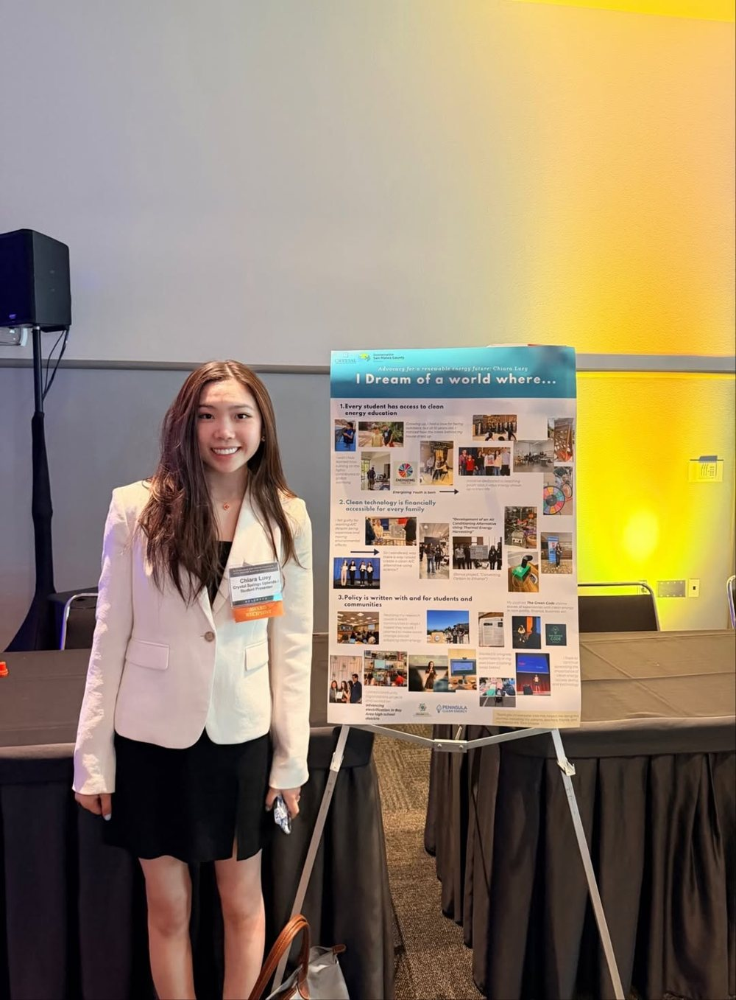
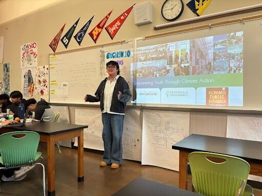
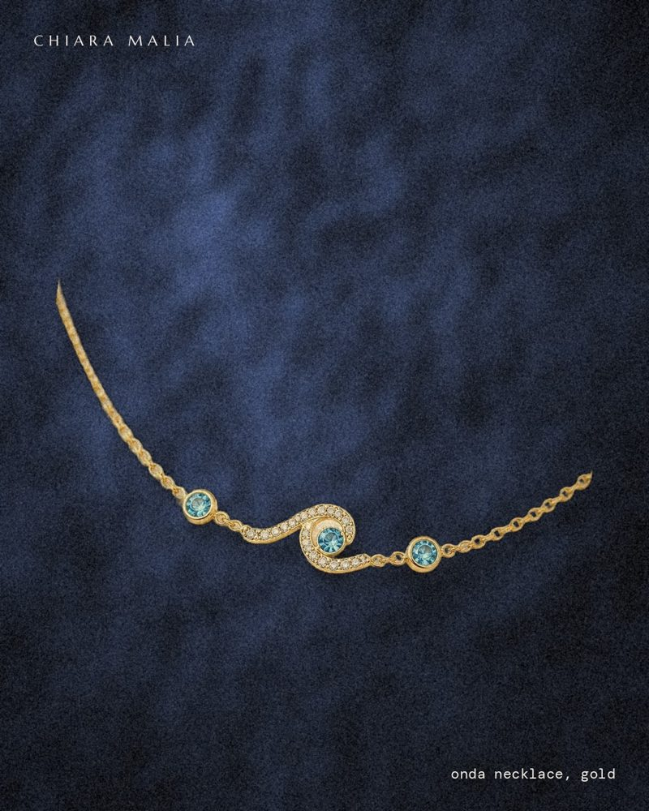
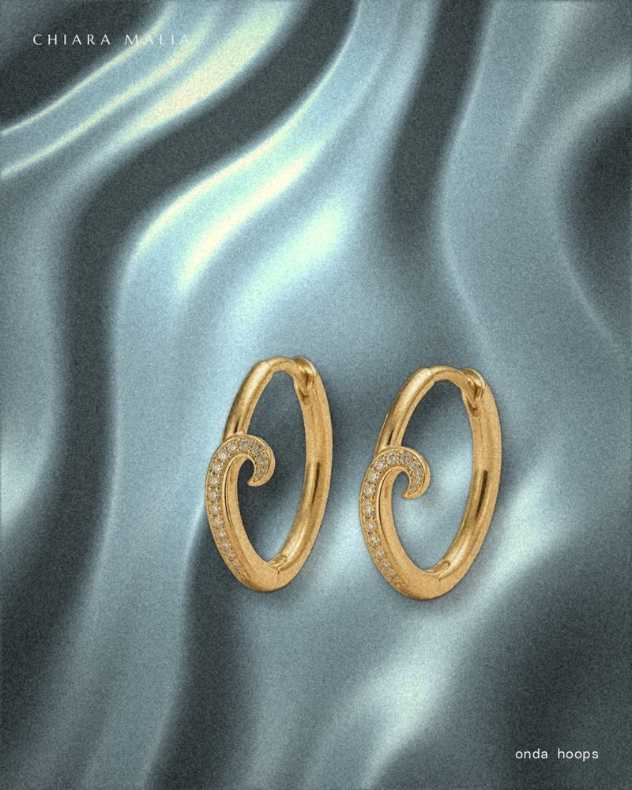

2026 — 2030

Cornell University
B.S. Environmental Engineering
Ithaca, NY. Coursework and certificates in quantitative modeling (Wharton) and modelling the energy transition (Politecnico di Milano).
Environmental Engineering @ Cornell · Class of 2030
Freshman at Cornell who loves energy and economics, and builds things to prove it.
students mobilized by Electric-First campaigns that passed clean-energy resolutions in 4 school districts
CO₂ per year: the estimated cut from those Electric-First resolutions
EV commercial-fleet charging sites sourced and scored across California at Shields Mobility
K–8 students reached by Energizing Youth, now with branches in Zambia & Brazil
less landfill waste after the school waste audits I led on Hillsborough Youth Commission
Faradaic efficiency reached simulating copper–MOF catalysts that turn tailpipe CO₂ into ethanol


Hi! Nice to meet you.
I’m Chiara Luey, a freshman at Cornell studying Environmental Engineering. I love energy and economics: how clean power gets invented, paid for and brought to the people who need it most.
That curiosity has taken me to chemistry labs, policy campaigns, K–8 classrooms and, most recently, a Judges’ Choice win at Cornell’s Local AI Hackathon. Off the clock I play squash (top-100 in the US), speak French and design jewelry for Chiara Malia.







“There's something that happens when a peer stands up and talks about clean energy.”
B.S. Environmental Engineering
Ithaca, NY. Coursework and certificates in quantitative modeling (Wharton) and modelling the energy transition (Politecnico di Milano).

New Member Education · Fall ’26 class
Writing investment theses on seed and Series A AI-infrastructure startups, including Hatchet, Atomic, Frenos, ZeroDrift and Build. Working with Cognition AI.
Member · Cornell University
Cornell’s student community for the clean-energy transition: technology, policy and markets.

Operations & Growth Intern
Helped take an AI food-tech startup from 0 to 1: chef and customer partnerships, outreach to 100+ prospects and VC-backed startups, and refining its AI taste model. Secured 3 VC sponsors and hosted a flagship dinner club of 20 founders from Stanford, Berkeley, MIT and YC companies.
Research Analyst
Sourced and scored 300+ EV commercial-fleet charging sites across California, tracked incentive programs to steer investment toward underserved infrastructure, and built an ArcGIS site to visualize and sort properties.

Research Intern
Graduate-student projects in computational molecular physics and energy storage in the Waymouth and Rotskoff labs.
Analyst
Built and pitched a solar financing proposal for a church, modeling 30%+ federal incentives, 20-year project economics and energy savings, with Peninsula Clean Energy to expand nonprofit solar across the Bay Area.

Clean Energy Advisor · former intern
Manage a $50K electrification grant, mentor interns and expand K–12 outreach to 360+ Peninsula students. Co-led Electric-First campaigns that passed resolutions in 4 school districts, mobilizing 9,000+ students and cutting an estimated 2M+ kg CO₂ a year; represented Peninsula Clean Energy at regional events and guest-spoke to 400+ students.
Market Researcher
Merged 2 public datasets and used spatial clustering and predictive modeling to map trash hot spots for autonomous waste collection at a 10-person robotics startup, later acquired.
Sustainability & materials science
CO₂-to-ethanol MOF catalysts (published, 91% Faradaic efficiency) and refrigerant-free thermoelectric A/C. Presented at ICAE (UN Bangkok), Columbia Junior Science Journal, MIT THINK, JSHS and the California Science & Engineering Fair.
Hillsborough, CA · 4.12 GPA
Distinguished Award in Science. President of STEM Invention Studio (membership up 50%, research symposium with 15 judges). Student Government for 6 years, including Co-President; led 30+ events. TEDx speaker.
Presidential Volunteer Service Award · Young Adult Gold
A youth-led clean-energy education program for K–8 students in under-resourced schools; 500+ students, with branches in Zambia and Brazil.
energizingyouth.org ↗Youth delegate on sustainable development to the UN’s official youth constituency.
Launched a statewide youth-policy network connecting 500+ commissioners across 20+ cities; co-hosted two 200-person summits.
Past President and VP Philanthropy. Led outreach for a 250+ member chapter across 40+ service initiatives; raised $16,000 for My New Red Shoes and secured a $1,500 grant.
Ran civic events reaching 300+ residents and school waste audits that cut landfill waste by 25%.
Pushed for Electric-First resolutions and spoke before the Sequoia Union High School District board.
Read the feature ↗Mentored 20+ members, grew membership 50% and ran 4 annual events, including a research symposium with 15 guest judges and speakers.
Interview series with scientists and policymakers, translating climate jargon into human stories.
A wave, caught in gold.
In Italian, chiara means clear and bright, full of light; malìa is an old word for a charm, a little spell. The brand started as waves drawn in the margins of my notebooks, the same curl sketched over and over until it felt like the sea. That curl became the Onda wave, and it is still exactly as I drew it.
The first collection, Onda e Marea, takes three ideas from the shoreline: Onda, the wave as it curls over; Marea, the line the tide leaves on sand; Mare, sky-blue stones in a blue I call Blu Cielo.





Cornell Commons — Adam, an on-device AI econ tutor (Bonsai-2 + Argmax)
National Award — National Center for Women & Information Technology
Sustainable San Mateo County
Elks National Foundation
Top 100 internationally — thermoelectric A/C research
CO₂-to-ethanol carbon-capture catalyst
Two-time recognition
International Astrophysics & Astronomy Competition
Young Adult Gold
National Merit Scholarship Program
TEDxCrystal Springs Youth — “Circles”
10 — let's talk